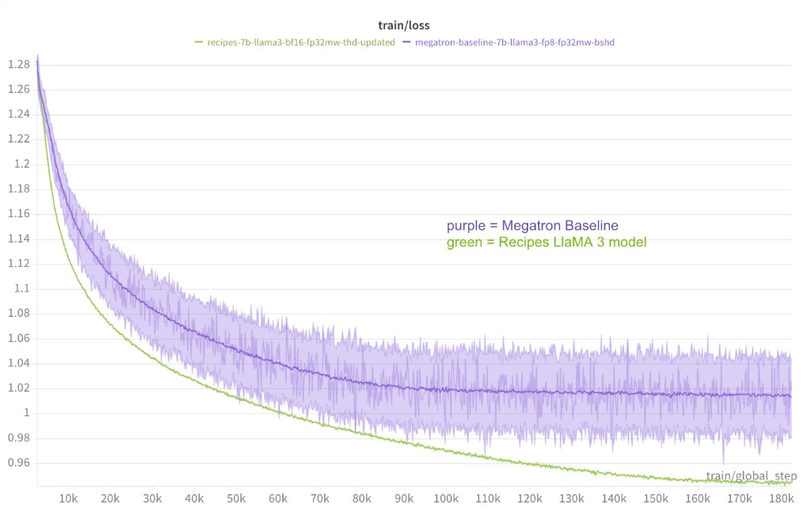
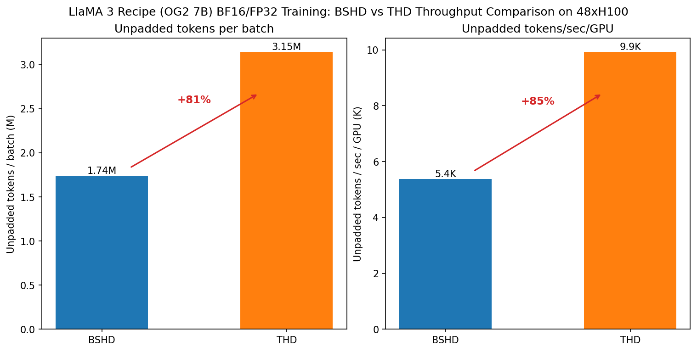

TransformerEngine-accelerated Llama 3 training for OpenGenome2
This folder demonstrates how to train TE-accelerated Llama 3 with a native PyTorch training loop for autoregressive DNA token prediction on the metagenome subset of the OpenGenome2 genomic dataset. It uses fully sharded data parallel (FSDP2), THD sequence packing, a custom nucleotide tokenizer, and supports FP32 master weights. Convergence has been validated against the Megatron/ShardedEden OpenGenome2 (OG2) baseline.
Convergence Benchmarks (vs Megatron Baseline)
Our baseline is the Megatron/NeMo Llama 3 model trained with the Megatron ShardedEden dataloader. The 7B model uses Grouped Query Attention (GQA) with 32 attention heads and 8 key-value heads, matching the configuration used by the reference Megatron baseline. To improve convergence and training stability for the OG2 recipe, we adopted features used in the Megatron stack: Spike-No-More embeddings, scaled initialization of output projections (proj/fc2), and BF16 compute with FP32 master weights.
However, this recipe uses THD sequence packing for training, whereas the Megatron baseline uses a standard BSHD dataloader. In the metagenome dataset, the median sequence length is ~2.2k and the average is ~4k, so with THD we process roughly 2–3× more tokens per training step (less padding waste). See Dataset and tokenization for more details on the data pipeline. As a result, this recipe achieves ~10% better average NLL loss and ~10% better perplexity on the test set than the Megatron baseline at a matched global batch size. Both runs use FP32 master weights; the Megatron baseline uses FP8 training and we use BF16. Reported results use GBS 384 on 6× H100 nodes (48 GPUs). Note that we also use bf16/fp32 training while the Megatron baseline uses fp8/fp32 training which may also contribute to its lower test performance.

| Model | Step / checkpoint | Train loss | Mean Test loss | Mean Test Perplexity |
|---|---|---|---|---|
| LlaMA3 Recipe (OG2 7B) | 182313 | 0.9444 | 0.9204 | 2.51 |
| Megatron baseline (OG2 7B) | 182313 | 1.01 | 1.019 | 2.80 |
Evaluation methodology: Test losses are average NLL (negative log-likelihood) computed using
scripts/evaluate_fasta_lm_loss.pyon 100 randomly sampled sequences from the metagenomics test chunk (data_metagenomics_test_chunk1), saved asscripts/metagenomics.fasta. The script computes per-tokenlog_softmax→gatherlog-probabilities, masks non-ACGT (degenerate) bases, and reports per-sequence mean NLL. The Megatron baseline was evaluated on the same FASTA file using an equivalent per-sequence log-probability script, so metrics are directly comparable.
Tokenizer: BOS/EOS handling
The nucleotide tokenizer adds <BOS> and <EOS> to every window. During windowed tokenization,
each chunk of max_seq_length tokens is wrapped as <BOS>...<EOS>. Both BOS and EOS are excluded
from the loss by the genomic masking (they are not DNA tokens, so their labels are set to -100).
Known difference from Megatron baseline: The Megatron/ShardedEden dataloader places <BOS> and
<EOS> only at true sequence boundaries, whereas this recipe adds them to every window — including
interior windows of a long sequence. Since both tokens are masked from the loss, the impact on
training is minimal (especially for this dataset where most sequences are shorter than one window).
A future improvement could add special tokens only at true sequence start/end using
add_special_tokens=False with manual BOS/EOS insertion; HuggingFace does not support this
natively with strided tokenization.
For inference, use add_special_tokens=True to match training conditions. For sequences longer
than 8192 tokens, use a sliding window with 200-token overlap to match training, or use context
parallelism.
Performance Benchmarks
MFU formula (same as Llama3 70B benchmarks)
MFU was calculated using a 989 TFLOPS/GPU maximum theoretical bf16 throughput for H100. Model FLOPS use the formula:
def compute_model_pflops(seq_len, global_batch_size, step_time_s):
B, S, H, L, V = global_batch_size, seq_len, HIDDEN_DIM, N_LAYERS, VOCAB_SIZE
model_flops = (
(24 * B * S * H * H + 4 * B * S * S * H) * (3 * L) + (6 * B * S * H * V)
) / step_time_s
return model_flops / 1e15
MFU and step time (vs Megatron baseline)
| Model | Step Time (s) | GBS | MFU (%) |
|---|---|---|---|
| This recipe (OG2 7B) | 6.60 | 384 | 51.8 |
| Megatron baseline | 5.01 | 384 | 68.2 |
This recipe is ~32% slower per step than the Megatron baseline (6.60 s vs 5.01 s). The gap is expected: the Megatron run uses FP8 and tensor parallelism (TP=4) which we do not yet enable. Enabling FP8 and TP should close most of this gap. Step times are computed as the slope of wall-clock time vs global step over a clean linear region.
Throughput: THD vs BSHD
As seen in the table and chart below, using THD with our recipe provides ~80-85% improvement in the throughput (measured in the number of unpadded tokens) compared to BSHD.
| Config | Unpadded Tokens/global batch | Unpadded Tokens/sec/GPU |
|---|---|---|
| THD (this recipe) | 1,741,106 | 9,927 |
| BSHD (this recipe) | 3,145,728 | 5,380 |

How to use this recipe
This folder contains an independent, minimal training example. It does not depend on any other code in the top-level bionemo-framework repository. You can download a zipped directory of this folder alone by clicking here.
Supported Models and Training Features
| Model / feature | BF16 | FP8[1] | THD Input Format | FP8 with THD Input Format | MXFP8[2] | Context Parallelism | Tensor Parallelism | FP32 Master Weights |
|---|---|---|---|---|---|---|---|---|
| Llama 3 (OpenGenome2 config) | ✅ | ✅ | ✅ | ✅ | ✅ | ✅ | 🚧 | ✅ |
✅: Supported
🚧: Under development
❌: Not supported
[1]: Requires compute capability 9.0 and above (Hopper+)
[2]: Requires compute capability 10.0 and 10.3 (Blackwell), 12.0 support pending
Additional features specific to the OG2 implementation: FP32 Mixed Precision training, Spike-No-More embedding init, Megatron-style scaled init for residual layers, weight decay grouping, and the genomic data collator.
Installing Dependencies
The easiest way to get started is to use the provided Dockerfile, which uses an NVIDIA PyTorch base image to provide optimized versions of PyTorch and TransformerEngine. To build the container, run:
docker build -t og2_llama_te .
docker run -it --gpus all --network host --ipc=host --rm -v ${PWD}:/workspace/bionemo og2_llama_te /bin/bash
Alternatively, the dependencies can be installed manually in an environment with CUDA support. See requirements.txt
for the list of dependencies.
Key Settings for Improved Accuracy
Megatron-Style Scaled Output Initialization
Residual output layers (attention proj, MLP fc2) use
std = initializer_range / sqrt(2 * num_layers) to match Megatron. Scaling by 1/sqrt(2*num_layers)
keeps the residual branch variance stable across depth so that activations and gradients neither blow
up nor vanish when stacking many layers. This is controlled by use_megatron_scaled_init in Hydra
(default true in hydra_config/defaults.yaml). Known bug: scaled init does not work
correctly with meta device init; set use_meta_device=false when using scaled init or
Spike-No-More embedding init. See
opengenome_modeling_llama_te.py for implementation details.
Weight Decay Parameter Skipping
We use weight-decay grouping that skips weight decay on biases, 1D parameters (e.g. LayerNorm/RMSNorm
weights), and optionally on embedding layers. Applying weight decay to embeddings can shrink their
norms and hurt representation quality; skipping it on biases and norm weights follows the Megatron
convention and avoids over-regularizing scale parameters. Controlled by use_weight_decay_grouping
and skip_embedding_weight_decay in Hydra (defaults: both true). See
optimizer.py for get_parameter_groups_with_weight_decay.
Spike-No-More Embedding Initialization
Embeddings are initialized with std=1.0 instead of the usual small initializer_range (e.g.
0.02). The intuition is that a larger initial embedding scale avoids an early loss “spike” and
improves training stability (Spike-No-More, arXiv:2312.16903).
Controlled by spike_no_more_embedding_init in Hydra (default true). When enabled, we also set
tie_word_embeddings=false and skip embedding weight decay (see above). Use
use_meta_device=false when combining with Megatron scaled init.
FP32 Master Weights and RoPE
when use_fp32_master_weights is enabled, we initialize the model in FP32 so that the master
weights are kept in FP32. Training uses BF16 parameters with FP32 gradient all-reduce via FSDP2 MixedPrecisionPolicy
(param_dtype=bf16, reduce_dtype=fp32). We also set cast_forward_inputs=False because the
default (True) would downcast RoPE embeddings — which are computed in FP32 in the model — to
BF16 at FSDP module boundaries, causing numerical issues in long-context attention. See
train_fsdp2.py for the policy setup.
Distributed Training
This recipe supports distributed training using FSDP2 and FSDP2 with Context Parallelism, shown in two separate training entrypoints:
- Fully Sharded Data Parallel 2
(FSDP2), shown in
train_fsdp2.py - FSDP2 with Context Parallelism, shown in
train_fsdp2_cp.py
Commands to Launch Training
To run single-process training on one GPU:
python train_fsdp2.py --config-name L0_sanity
To run multi-process training locally (e.g. 8 GPUs):
torchrun --nproc_per_node=8 train_fsdp2.py --config-name og2_7b_thd_gqa
Multi-node example (e.g. 6 nodes × 8 GPUs):
torchrun --nproc_per_node=8 --nnodes=6 --node_rank=$RANK \
--master_addr=$MASTER_ADDR --master_port=$MASTER_PORT \
train_fsdp2.py --config-name og2_7b_thd_gqa \
checkpoint.ckpt_dir=/output/checkpoints
Gradient accumulation is supported. Set grad_acc_steps to the number of micro-batches to
accumulate before each optimizer step (e.g. to scale effective batch size on fewer GPUs):
torchrun --nproc_per_node=8 train_fsdp2.py --config-name og2_7b_thd_gqa grad_acc_steps=8
A tiny convergence/sanity config (L0_sanity) is available to overfit on a small dataset:
python train_fsdp2.py --config-name L0_sanity
FP8 Training
To run training with FP8, enable it via the fp8_config.enabled=true override. Use the
og2_7b_thd_gqa_fp8 config or override FP8 settings in your config:
torchrun --nproc_per_node=8 train_fsdp2.py --config-name og2_7b_thd_gqa fp8_config.enabled=true
FP8 debugging (stats collection for activations/weights/gradients) can be enabled with
fp8_stats_config.enabled=True and related options; see fp8_debugging.py and
the Transformer Engine config
documentation.
Sequence Packing (THD input format)
Sequence packing is handled via a padding-free collator that provides inputs (e.g. cu_seq_lens_q)
for padding-free attention. Enable it with use_sequence_packing=true in the Hydra config. The
main OpenGenome2 configs use THD by default.
python train_fsdp2.py --config-name L0_sanity use_sequence_packing=true
Context Parallel Training
Context parallelism splits each sequence across multiple GPUs along the sequence dimension, enabling
training with very long sequences. Use train_fsdp2_cp.py with the L0_sanity_cp configuration and
set cp_size to the number of context parallelism ranks. Works with both BSHD (no padding) and
THD (padding) input formats. Only TE models are supported.
torchrun --nproc_per_node=4 train_fsdp2_cp.py --config-name L0_sanity_cp cp_size=2
Downloading Pre-Training Data
The default configs expect OpenGenome2-style data: either JSONL (e.g.
data_metagenomics_train_*.jsonl.gz) for streaming, or a directory of globally shuffled Parquet
shards. For details on the data pipeline, how to reshard your data with DuckDB, and the tradeoffs
between streaming approaches, see Dataset and tokenization.
Point dataset.load_dataset_kwargs.path to your data directory (or use the appropriate config).
Example for pre-chunked Parquet:
torchrun --nproc_per_node=8 train_fsdp2.py --config-name og2_7b_thd_gqa_global_shuffle \
dataset.load_dataset_kwargs.path=/path/to/parquet_shards
Saving and Loading Checkpoints
Set checkpoint.ckpt_dir to a writable directory. Checkpoint frequency is controlled by
checkpoint.save_every_n_steps:
torchrun --nproc_per_node=8 train_fsdp2.py --config-name og2_7b_thd_gqa \
checkpoint.ckpt_dir=/output/checkpoints \
checkpoint.save_every_n_steps=1000
To resume from the latest checkpoint, set checkpoint.resume_from_checkpoint=true:
torchrun --nproc_per_node=8 train_fsdp2.py --config-name og2_7b_thd_gqa \
checkpoint.ckpt_dir=/output/checkpoints \
checkpoint.resume_from_checkpoint=true
Set checkpoint.save_final_model=true to export a final model at the end of training (saved under
final_model in the checkpoint directory), suitable for Hugging Face Hub or local inference.
Saving Dataloader State with StatefulDataLoader
Checkpointing can save and restore dataloader position when using the StatefulDataLoader from
torchdata. Enable it with dataset.use_stateful_dataloader=true. The save/load logic is in
checkpoint.py; the dataloader instance is passed to save_checkpoint_fsdp2 and
load_checkpoint_fsdp2 so that resume continues from the correct step in the data stream.
Performance Profiling with NVIDIA Nsight Systems
This recipe supports profiling with NVIDIA Nsight Systems. Enable it with profiler.enabled=true
and set profiler.start_step and profiler.end_step to define the step range to profile.
Profiling runs only on global rank 0 in distributed runs.
Single GPU:
nsys profile \
-o nsight_trace \
--trace=cuda,nvtx,osrt,cudnn,cublas \
--pytorch=autograd-nvtx \
--capture-range=cudaProfilerApi \
--capture-range-end=stop \
python train_fsdp2.py profiler.enabled=true profiler.start_step=10 profiler.end_step=15
Multi-GPU: Wrap the same python/torchrun command with nsys profile ...; only rank 0
will profile. See perf_logger.py and the Nsight Systems
documentation.
Running Inference with the Trained Model
Models can be loaded from the final checkpoint directory using AutoModelForCausalLM or
NVLlamaForCausalLM from this recipe. Standard Hugging Face loading works if config.json is
updated to include an auto_map entry for opengenome_modeling_llama_te.NVLlamaForCausalLM and
the custom forward pass is packaged in the checkpoint directory. Use
add_special_tokens=True when tokenizing input sequences to match training (the model was
trained with <BOS> and <EOS> on every window).
If you trained with TE layers (which is the default), use NVLlamaForCausalLM for inference with
TE’s InferenceParams key-value cache:
import torch
from transformers import AutoTokenizer
from transformer_engine.pytorch.attention import InferenceParams
from opengenome_modeling_llama_te import NVLlamaForCausalLM, NVLlamaConfig
# Load the model configuration and weights
config = NVLlamaConfig.from_pretrained("path/to/final_model")
model = NVLlamaForCausalLM.from_pretrained("path/to/final_model", config=config)
tokenizer = AutoTokenizer.from_pretrained("./tokenizers/nucleotide_fast_tokenizer")
model.to("cuda")
model.eval()
# Example genomic sequence
sequence = "ACGTACGT"
inputs = tokenizer(sequence, return_tensors="pt").to("cuda")
# Setup inference parameters for efficient generation
past_key_values = InferenceParams(
max_batch_size=1,
max_sequence_length=256,
num_heads_kv=model.config.num_key_value_heads,
head_dim_k=model.config.hidden_size // model.config.num_attention_heads,
dtype=torch.bfloat16,
qkv_format="thd",
max_ctx_len=256,
)
for layer_number in range(1, model.config.num_hidden_layers + 1):
past_key_values.allocate_memory(layer_number)
# Generate
with torch.no_grad():
output_ids = model.generate(
**inputs, max_new_tokens=16, use_cache=True, past_key_values=past_key_values
)
generated_text = tokenizer.batch_decode(output_ids, skip_special_tokens=True)
print(generated_text)
Converting to Hugging Face Format
To convert the trained TE model to a standard Hugging Face LlamaForCausalLM (e.g. for vLLM or
SGLang), you can use the conversion script in the parent Llama3 models directory
(../../models/llama3/convert.py) if the model layout matches. Load with NVLlamaForCausalLM and
NVLlamaConfig from this recipe, then call convert_llama_te_to_hf(model_te) and save the
resulting model and tokenizer.
Hydra Configs
| Config | Description |
|---|---|
og2_7b_thd_gqa |
Main 7B GQA config; streaming JSONL, windowed tokenization |
og2_7b_thd_gqa_global_shuffle |
Pre-chunked Parquet shards (globally shuffled) |
og2_7b_thd_gqa_fp8 |
FP8 variant with Float8BlockScaling |
L0_sanity |
Tiny model for CI/CD testing |
See hydra_config/defaults.yaml for all options.
Evaluating Checkpoints
To compute per-sequence test loss on a fixed FASTA file (for comparing checkpoints or models):
cd scripts
torchrun --nproc_per_node=1 evaluate_fasta_lm_loss.py \
--checkpoint-dir /path/to/checkpoint \
--checkpoint-step 30000 \
--fasta metagenomics.fasta \
--output /path/to/results.json
This computes per-token log probabilities for each sequence in the FASTA file, masks degenerate
bases, and reports per-sequence and aggregate metrics (CE loss, perplexity). Results are saved as
JSON for easy comparison across runs. See scripts/evaluate_fasta_lm_loss.py for full usage.
Validation Logging
Validation logging during training can be enabled with validation.enabled=true and validation.data_path pointing to
validation data (e.g. a JSONL file). The og2_7b_thd_gqa config enables validation by default.
Control evaluation frequency with validation.eval_interval and validation.num_batches.This can be helpful when debugging training convergence.
Developer Guide
Running tests
From the repository root, run the recipe test script with the recipe path:
./ci/scripts/recipes_local_test.py recipes/opengenome2_llama_native_te/
Or from this recipe directory:
pytest -v tests/
Development container
Use "Dev Containers: Reopen in Container" in VS Code and choose the "BioNeMo Recipes Dev
Container" option. Run tests inside the container with pytest -v . in this directory.
Hydra tips
Hydra manages training configurations. Override parameters from the command line, e.g.:
python train_fsdp2.py --config-name L0_sanity fp8_config.enabled=true
python train_fsdp2.py --config-name og2_7b_thd_gqa grad_acc_steps=8 checkpoint.save_every_n_steps=500